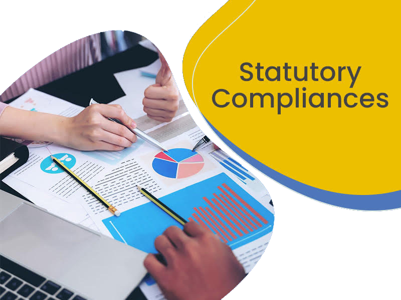

<div class="bgcheck">
    <div class="container">
        <div class="bodyAlign" data-aos="zoom-in">
            <div class="card headerTag my-4">
                <span class="m-2">STATUTORY COMPLIANCES</span>
            </div>
        </div>
        <div class="row contentText">
            <div class="col-sm-12 col-md-6 mb-2 bodyAlign">
                
            </div>
            <div class="col-sm-12 col-md-6 mb-2" data-aos="fade-left">
                <p>Compliance is not a revenue-generating function of a business. However, it is a component of successfully managing occupational risk and executing business strategies. Compliance outsourcing service is a function of business associated with compliance, which is being transferred to a third party vendor or provider located offshore rather than in-house compliance department.</p>
                <p>Every organization must comply with the employment law, rules and regulations where they are based. HR compliance outsourcing plays an important role to achieve all these standards. Compliance outsourcing takes a proactive approach to ensure that an organization meets all of its legal obligations.</p>
                <p>We have a dedicated Knowledge Management Office that supports your business to be legally compliant. With our vibrant and committed compliance professionals, qualified HR and legal/financial experts, we are ideally placed to help businesses redevise their strategies.</p>
            </div>
        </div>
    </div>
</div>